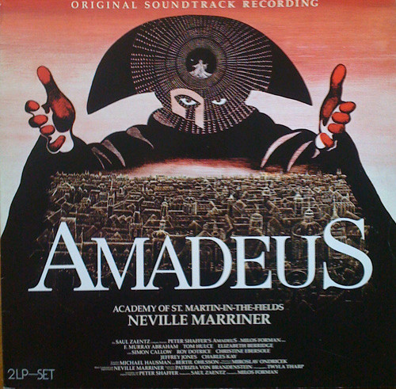

LP
Amadeus (Original Soundtrack Recording)
The Academy Of St. Martin-in-the-Fields, Sir Neville Marriner
Media: — · Sleeve: —
—
Personal
Discogs SuggestedCA$85.51
Discogs MedianCA$85.51
Discogs HighCA$85.51
- Physical Copy ID
- BB-LP-330
- Year
- 1984
- Label
- Metronome
- Catalog #
- 825 126-1 ME
- Country
- DEGermany
- Genre / Style
- Classical, Stage & Screen · Classical, Soundtrack